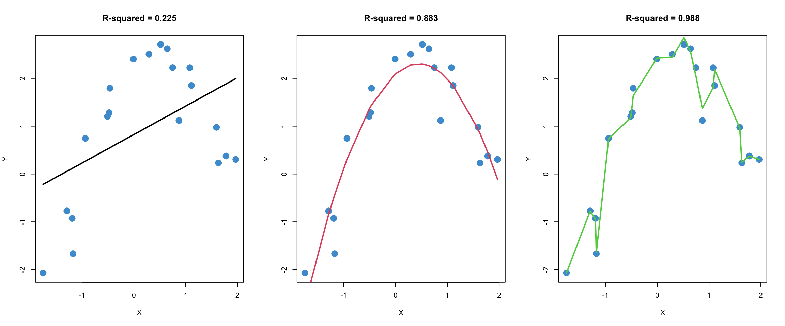

2.12 The lm function
The functionlm, short for “linear model”, can estimate linear regressions using OLS and provide a lot of useful output. The main argument that the user provides to the lm function is a formula. For the simple regression of Y on X, a formula has the syntax
Y ~ X
Here Y denotes the outcome variable, the tilde ~ roughly means “equals”, and X is the predictor variable. We will see more complicated formulas as we go through the course. For more information on R’s formula syntax, see help(formula).
Let’s take a closer look using the following two variables from the NELS data (see Sakai resource folder for more information on the data).
achmat08: eighth grade math achievement (percent correct on a math test)ses: a composite measure of socio-economic status, on a scale from 0-35
## The following objects are masked from NELS (pos = 3):
##
## absent12, achmat08, achmat10, achmat12, achrdg08, achrdg10,
## achrdg12, achsci08, achsci10, achsci12, achsls08, achsls10,
## achsls12, advmath8, alcbinge, algebra8, apoffer, approg, cigarett,
## computer, cuts12, edexpect, excurr12, expinc30, famsize, gender,
## homelang, hsprog, hwkin12, hwkout12, id, late12, marijuan, numinst,
## nursery, parmarl8, region, schattrt, schtyp8, ses, slfcnc08,
## slfcnc10, slfcnc12, tcherint, unitcalc, unitengl, unitmath, urban
# Regress math achievement on SES
mod <- lm(achmat08 ~ ses)
# Print out the regression coefficients
coef(mod)## (Intercept) ses
## 48.67803 0.42926Let’s do some quick calculations to check that the lm output corresponds the formulas for the slope and intercept we used in the lesson:
\[ a = \bar Y - b \bar X \quad \text{and} \quad b = \frac{\text{Cov}(X, Y)}{s_X^2} \]
# Confirm that the slope from m is just the covariance divided by the variance of X
cov_xy <- cov(achmat08, ses)
s_x <- var(ses)
b <- cov_xy / s_x
b## [1] 0.42926# Confirm that the y-intercept is obtained from the two means and the slope
xbar <- mean(ses)
ybar <- mean(achmat08)
a <- ybar - b * xbar
a## [1] 48.678Let’s also check our interpretation of the parameters. If the answers to these questions are not clear, please make sure to ask in class or on the Sakai forum.
What is the value of
achmat08whensesis equal to zero?How much do the predicted values of
achmat08increase for each unit of increase inses?